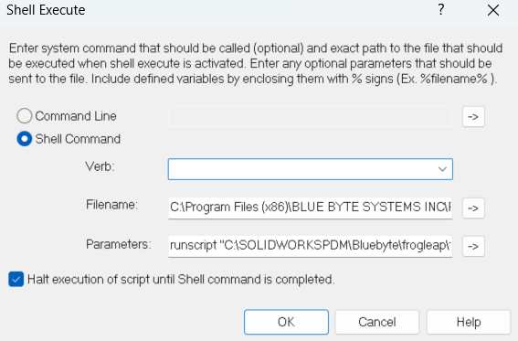

Notes About Running PDMShell Scripts from Dispatch
When you want to run PDMShell scripts from Dispatch, you can use the Shell Command action.
Shell Command Settings

- Verb: Leave this field empty.
- Filename: Specify the path to the PDMShell executable, which is
pdmcli.exe.
Note
Do not wrap the path in quotes (""), even if it contains spaces.
- Parameters: Use the following format:
runscript "pathToScript" [additional parameters]
- The pathToScript must be wrapped in quotes ("") if it contains spaces.
- Additional parameters can be passed to the script as needed.
Example: Dispatch Shell Execute Configuration
Verb: #leave this empty
Filename: C:\Program Files (x86)\BLUE BYTE SYSTEMS INC\PDMShell\PDMCLI.exe
Parameters: runscript "C:\Scripts\frogleap.pdmshell" "%PathToSelectedFile%" "%OldVersion%"
Example Script:
In the PDMShell script (frogleap.pdmshell), you can reference the parameters as follows:
# check selected file out
checkout -filePath "$parameter1$"
# frogleap version to specified version
frogleap -filePath "$parameter1$" -oldVersion "$parameter2$"
# save changes
checkin -filePath "$parameter1$" -comment "prompted version $parameter2$"
# you must call this
quit
Tutorial
Tips for Running PDMShell Scripts from Dispatch
- Test Your Scripts: Always test your PDMShell scripts independently before integrating them with Dispatch.
- Use Quotes for Paths: Wrap paths and parameters in quotes ("") if they contain spaces to avoid errors.